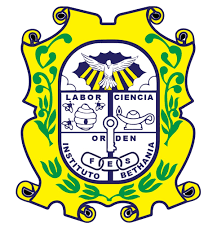
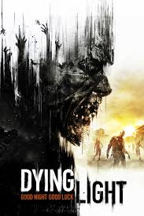

Introducción
Mi nombre es Diego Alejandro Orellana Estrada y soy estudiante de ingeniería en sistemas, soy actual alumno de la ESEN.
Tengo 20 años y soy de nacionalidad salvadoreña, nací en San Salvador el 5 de agosto del 2005.
Actualmente vivo en Santa Tecla, La Libertad y me encuentro en segundo año de la carrera de Ingeniería en Sistemas.
Actualmente vivo con mis 2 padres y mis 2 hermanos, siendo yo el mayor.
Datos Personales
Nombre Completo: Diego Alejandro Orellana Estrada
Edad: 20 años
Nacionalidad: Salvadoreña
Fecha de Nacimiento: 5 de agosto del 2005
Lugar de Nacimiento: San Salvador, El Salvador
Residencia Actual: Santa Tecla, La Libertad
Gustos: La tecnologia, el futbol y videojuegos.
Padre: Edgardo Armando Orellana Estrada
Madre: Marte Ligia Estrada de Orellana
Hermano: Gabriel Sebastian Orellana Estrada
Hermana: Isabella Orellana Estrada
Formacion Academica
Mi formacion parvularia se realizo en American Childrens Paradise, en donde permaneci hasta el año final de Kinder
Mi formacion primaria se realizo en el Colegio Catolico Hermana Coralia Haydee Quiroz, donde permaneci hasta el 5to grado.
Mi formacion secundaria se realizo en el Instituto Bethania, donde permaneci hasta completar el bachillerato.

Actualmente estoy cursando la carrera de Ingenieria en Sistemas en la Escuela Superior de Economia y Negocios (ESEN).
Pasatiempos
Entre mis pasatiempos se encuentran los videojuegos, el cine, el futbol y la musica.
Entre mis videojuegos favoritos se encuentran los juegos de disparos, los plataformeros y los de rol. Algunos ejemplos son:


En el futbol mi equipo favorito es el Liverpool FC y mi posicion favorita es la de arquero.